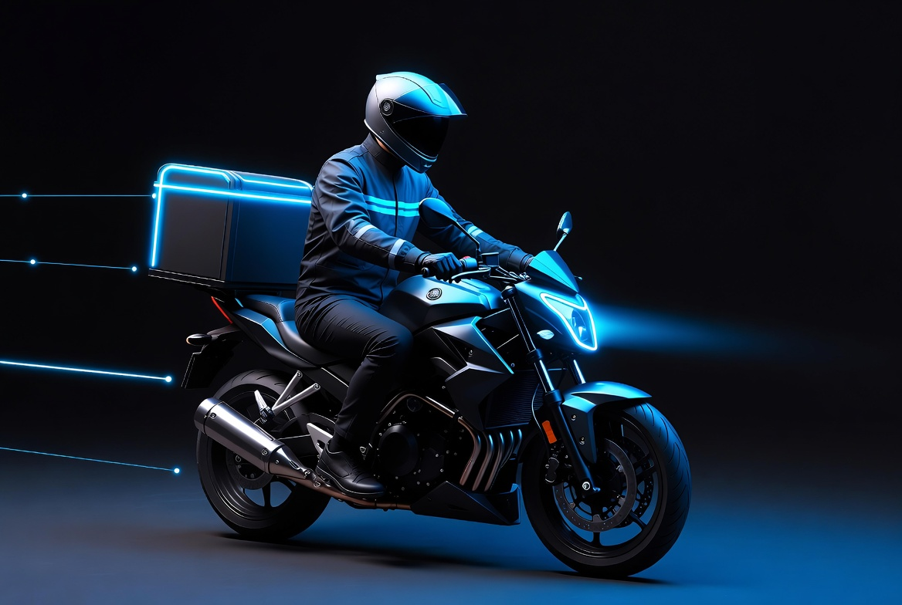

La fiabilité à chaque km
Rapidité Fiabilité Securité Facilité
LivreurPro inspire confiance, rapidité et fiabilité. Des livreurs qui reflètent le sérieux du service, modernes et accueillantes.
LivreurPro inspire confiance, rapidité et fiabilité. Des livreurs qui reflètent le sérieux du service, modernes et accueillantes.
